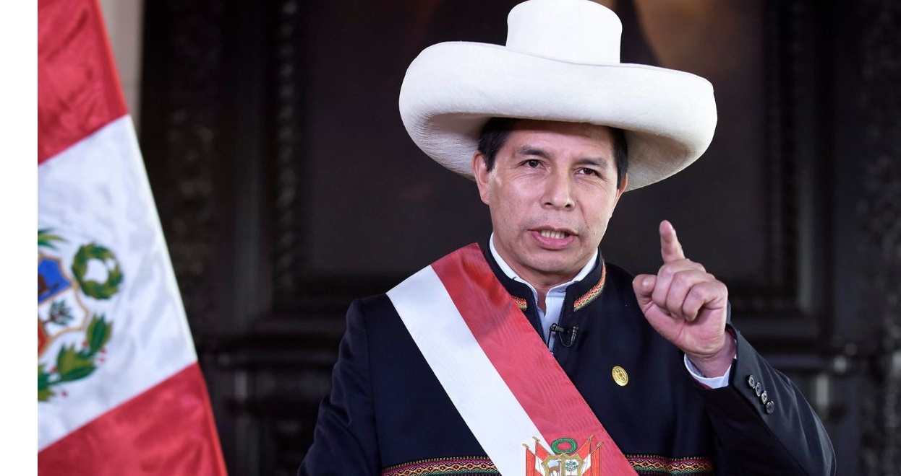

POLÍTICA ECONOMÍA SOCIEDAD MUNDO DEPORTES ESPECTÁCULOS REDES SOCIALES
POLÍTICA
Pedro Castillo fue remunerado pese a afirmar que renunciaría a su sueldo de presidente
El mandatario recibió su primer sueldo como jefe de Estado a pesar de asegurar, anteriormente, que renunciaría al sueldo de presidente en caso se llevara las elecciones. Dinero ya se encuentra en su cuenta; no obstante, aún se desconoce si se efectuó el cobro. El presidente de la República, Pedro Castillo, ya posee en su cuenta bancaria los 17.600 soles correspondientes a su primer sueldo como jefe de Estado. Si bien la remuneración de un mandatario está fijada en 15.500 soles, se le incrementó un monto mayor por los tres días de julio. Según el Portal de Transparencia, el dinero se desembolsó bajo el régimen laboral 276; no obstante, aún no se confirma si se efectuó el cobro. Asimismo, se pudo conocer que solo aparece el pago de agosto, es decir, aún no están los otros sueldos presidenciales de Pedro Castillo Terrones. Pedro Castillo aseguró que no cobraría el sueldo presidencial El 27 de mayo y durante un mitin en la región de Piura, Castillo indicó que renunciaría al sueldo de presidente y a la pensión vitalicia en caso de ganar las elecciones generales. En aquella ocasión, aseguró que gobernaría con su sueldo de profesor. “Nosotros vamos a renunciar al sueldo presidencial y a la pensión vitalicia. Vamos a conducir la patria con el sueldo de maestro para darle a los más necesitados”, dijo en esa oportunidad. Cabe mencionar, que aún se desconoce si el mandatario ha efectuado el cobro de su remuneración, ya que el Portal de Transparencia solo confirma la operación de giro a una de sus cuentas bancarias. Pedro Castillo visitó a sus padres El presidente de la República, Pedro Castillo, arribó el último domingo 10 de septiembre al centro poblado de Puña, que se ubica en el distrito de Tacabamba (Cajamarca) para visitar a sus padres, Ireño Castillo Núñez y Mavila Terrones Guevara, quienes se encontrarían delicados de salud. Según informó Alex Vásquez, colaborador de Canal N, la llegada del mandatario se realizó vía aérea, en dos helicóptero de la Policía Nacional del Perú. De esta manera, el jefe de Estado, quien también participará de algunas actividades en Cajamarca, permanece en la localidad debido a que quiere informarse sobre la condición actual de sus padres. Su llegada fue resguardada por efectivos policiales que garantizaron la seguridad del mandatario.